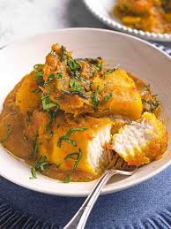

Home
PORRIDGE YAM

Description
Yam porridge is a very delicious Yam recipe though it's eaten by most
tribes in Nigeria however, it is more common in the Yoruba-speaking parts
of Nigeria. It’s also easy to make.
Ingredients
- 1 medium Yam tuber
- 1 Red Bell Pepper
- 1 large Tomato
- 1 Habanero Pepper
- 1 large Onion divided into two
- 3 cups Water
- ½ Cup of fresh Palm Oil
- 2 Tablespoons Crayfish
- Salt to taste
- 2 teaspoon chicken bouillon powder or 2
cubes
- 15 ounces Mackerel fish salmon, stockfish or dried fish
- Parsley or any Leafy vegetables (spinach, kale, ugwu)
Steps
- Peel and cut the Yam into medium-sized chunks.
- Rinse a couple of times until the water is no longer cloudy.
- Set aside Blend the bell pepper, habanero, tomato, and half onion.
- Put the yams inside a pot, and add the blended sauce, salt, bouillon powder, and water.
- Cover and let it cook for 10 minutes on medium to high heat Stir in the palm oil, sliced onions, and
crayfish, cover, and leave to cook for an additional 10 minutes.
- Addthe fish (You can use whatever addition you prefer, like smoked fish or crab meat).
- Allow it to simmer for an additional 3 to 5 minutes.
- Stir in the herbs like basil, or leafy greens like spinach, kale, or ugwu) and enjoy while still hot!